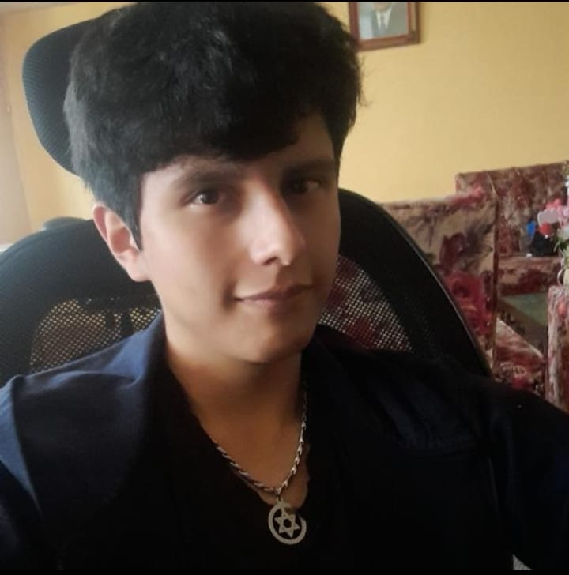

Soy estudiante de la Escuela Politécnica Nacional estudiando la carrera de Tecnología en Desarrollo de Software, actualmente cursando 4to Semestre de mi carrera en busca de oportunidades para realizar mis Pasantías/Prácticas Profesionales para mejorar mis habilidades como programador dentro del campo laboral

Correo: alejodavicho8gmail.com
Telefono: 0984922077
Github: DavidPK8
Trabajo en puntonet apoyando en soluciones corporativas en el cual mi trabajo se desempeña en desarrollar el funcionamiento de varias páginas web tanto en el front como en el back además de proporcionas ideas para mejorar el funcionamiento de las páginas web.
Unidad Educativa Manuela Cañizares 2014 - 2020
Escuela Politecnica Nacional 2021 - Actualidad